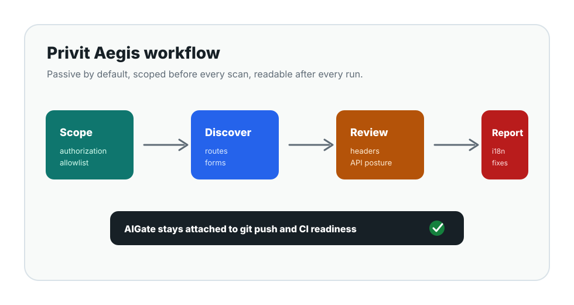

Scope guard
Validates authorization, loopback safety, discovery depth, page limits, and denied paths.
Authorized security testing workspace
A local web console and CLI workflow for passive discovery, security posture review, localized reports, AI-assisted remediation prompts, and AIGate push readiness.
Workflow
The workspace verifies scope, maps the target passively, reviews security posture, localizes evidence, and keeps AIGate for git and CI quality checks.

Detection coverage
Validates authorization, loopback safety, discovery depth, page limits, and denied paths.
Inventories routes, forms, auth-like pages, sitemap entries, redirects, and blocked URLs without submitting forms.
Reviews CSP, HSTS, Referrer-Policy, nosniff, frame controls, isolation headers, CORS, and Permissions-Policy.
Looks for OpenAPI, GraphQL, OIDC, JWKS, versioned APIs, auth/session endpoints, and public account data signals.
Reports
Reports include the target, scan mode, discovery map, findings, pass criteria, recommended fixes, and redaction policy in the selected language.
AI
Codex, Gemini, Claude, local AI, and API providers can be configured for readiness checks and remediation prompts. Scan findings stay based on response metadata and passive evidence.
Run locally
npm run setup
npm run webOpen http://127.0.0.1:4317, confirm the authorized target, run Start, and open the localized report.